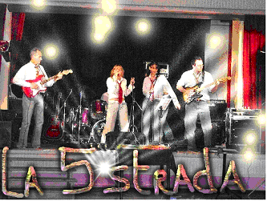
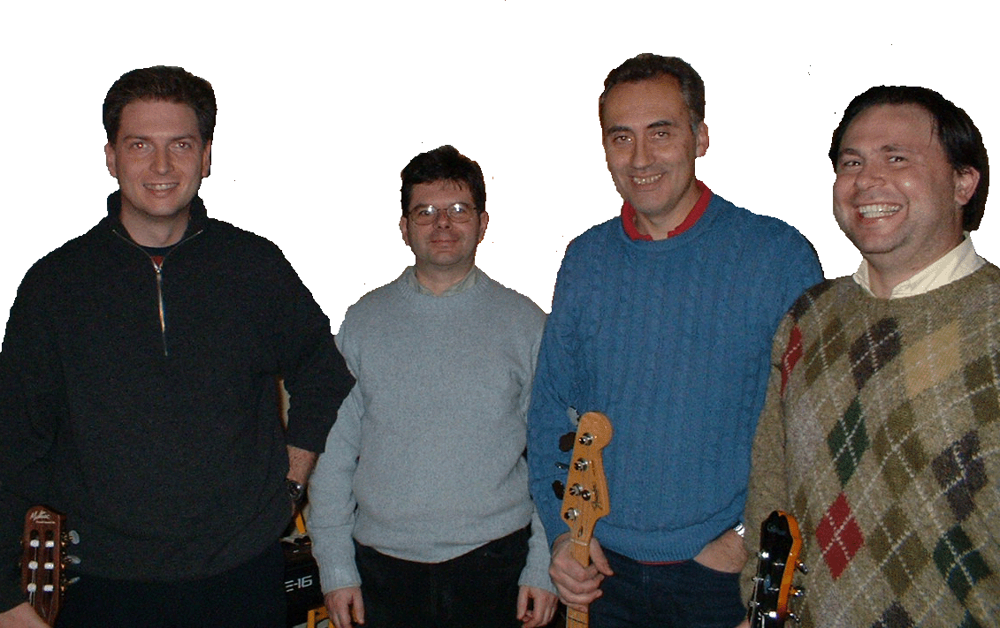
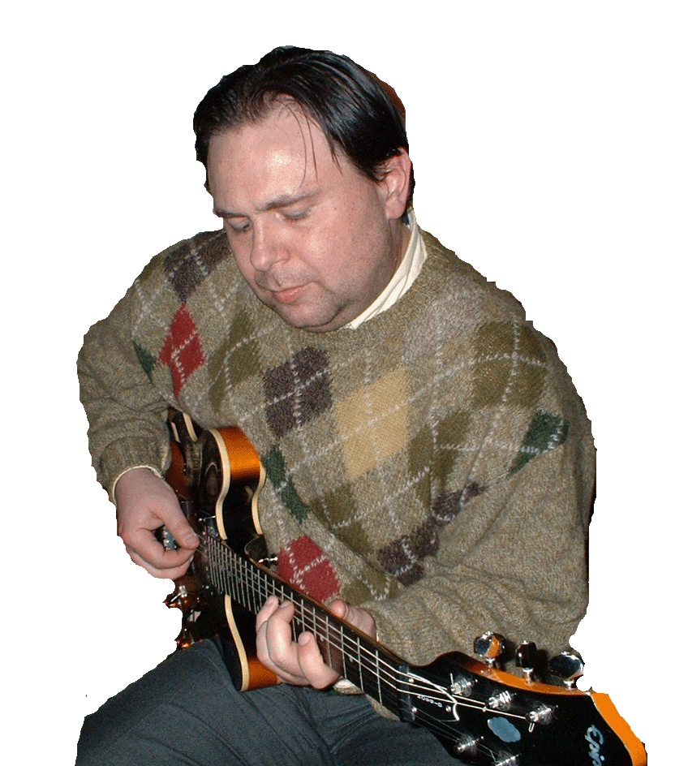
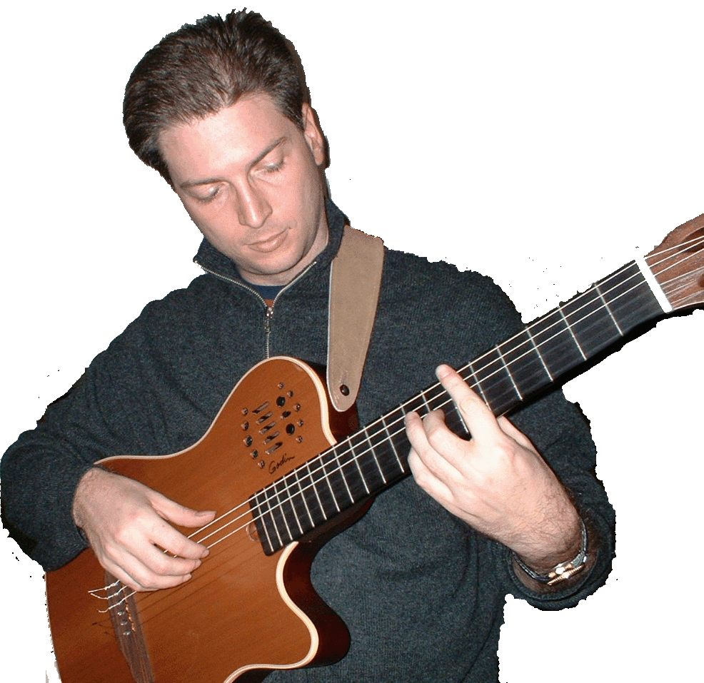
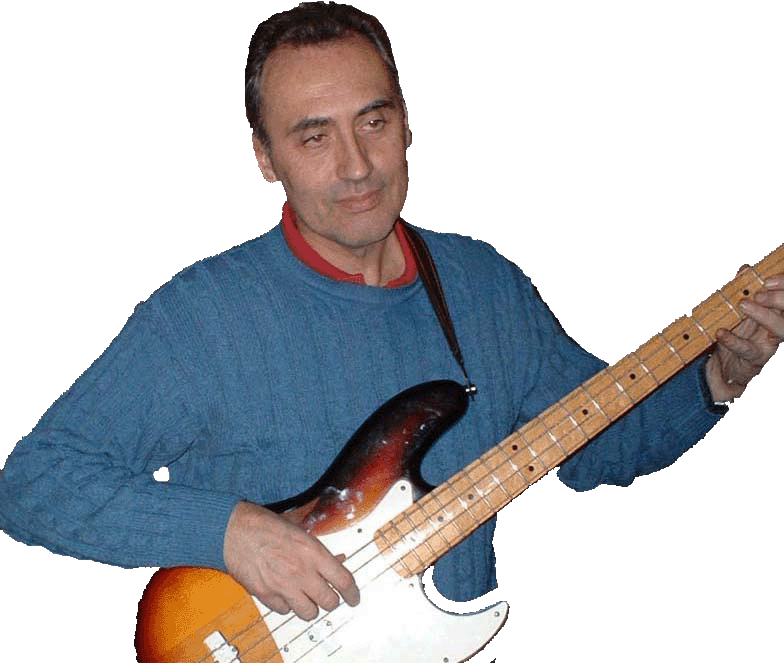
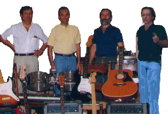
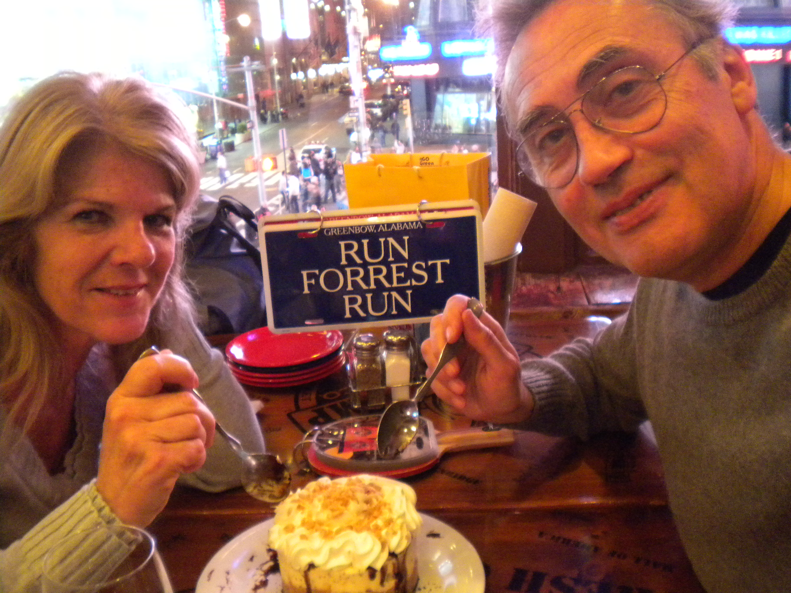

La Quinta Strada

La Quinta Strada è la cover band per eccellenza del gruppo — un repertorio ampio e variegato che spazia dai classici rock alle ballate italiane, pensato per far cantare e ballare il pubblico di ogni generazione. Il nome evoca le grandi strade della musica, quelle percorse da chi ama suonare con il cuore.
Sito ufficiale3D Experience +

Un quartetto jazz dove ogni musicista porta una personalità distinta e riconoscibile. Le improvvisazioni si intrecciano con un linguaggio moderno e aperto, in un equilibrio tra rigore teorico e libertà espressiva. Il segno "+" nel nome non è casuale — c'è sempre qualcosa in più da scoprire.
Due album registrati: il primo esplora i grandi standard bossa nova e bebop; il secondo approfondisce il linguaggio jazz con brani di Miles Davis, Coltrane e Charlie Parker, incluse versioni in trio.

Roberto
Basso
"Solidissima preparazione teorica, eclettico — suona di tutto. Combina uno stile personale con una natura socievole."
Marco
Tastiere
"Jazzista puro, uno stile diretto ed incisivo. Usa la tastiera come mezzo di espressione per le sue ricerche musicali."

Gaetano
Chitarra
"Ottimo chitarrista di estrazione classica — le sue improvvisazioni rivelano una forte personalità artistica."

Gianfranco
Chitarra · Base ritmica
"Sembra estraneo al gruppo per età e competenze, ma funge da base strutturale per i tre musicisti principali."
Four Fifties

Quattro musicisti, un solo obiettivo: suonare rock con energia e fedeltà ai grandi classici. Il repertorio dei Four Fifties attraversa decenni di musica anglosassone, dai Beatles ai Rolling Stones, da Elvis a Queen, da Simon & Garfunkel a Joe Satriani.
DaDax

I DaDax nascono nella primavera del 2009 come sodalizio fra due adulti uniti dalla passione per la musica e la gioia di vivere. Daniela e Dax (Gianfranco) hanno costruito insieme un album dedicato alla chanson francese — sette brani rielaborati con cura, completato per il Natale 2009.
"Un sodalizio nato per puro piacere — solo la musica."
Daniela
Voce
La voce del progetto — sensibilità e calore nella chanson francese.
Dax — Gianfranco
Chitarra · Arrangiamenti
Arrangiamenti e chitarra che danno corpo alla chanson reinterpretata.